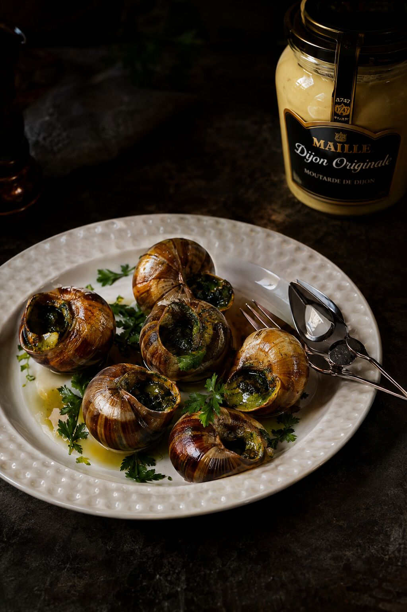
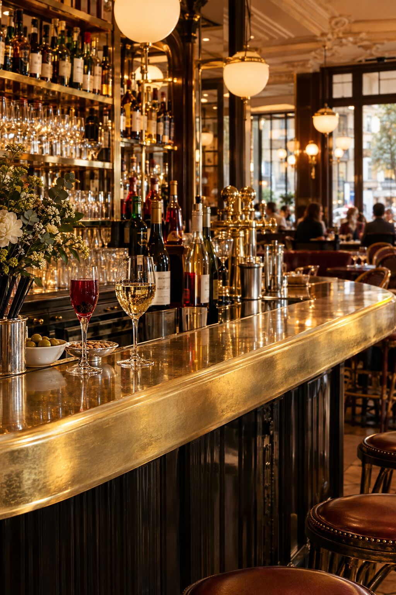
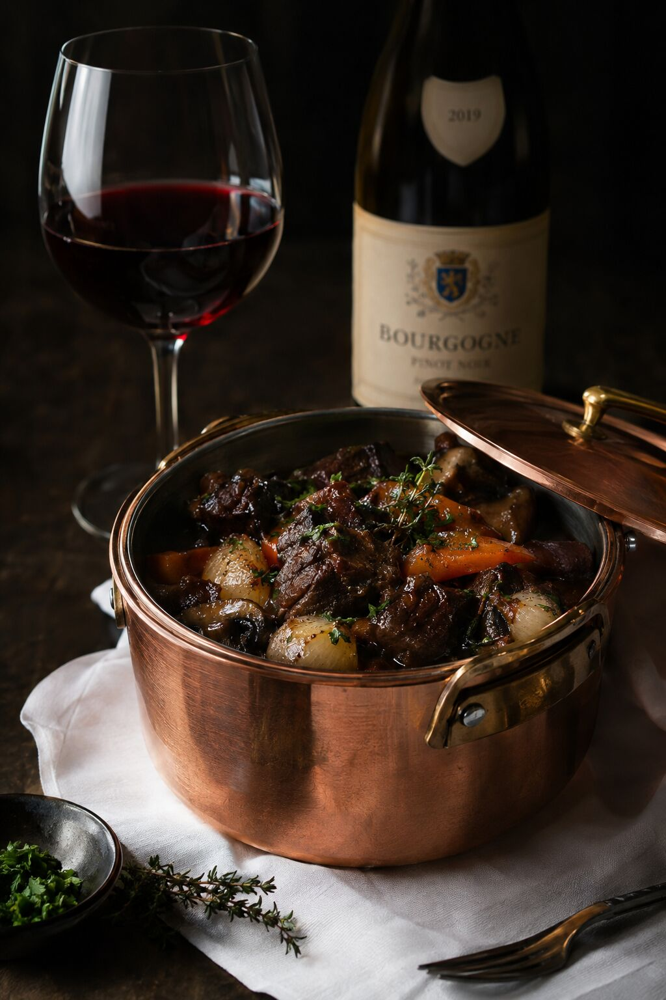

Le décor
Boiseries laquées vert Bourgogne, laitons patinés, banquettes de velours bordeaux et zelliges faits main.

Brasserie bourguignonne · Casablanca
Une grande brasserie dijonnaise au cœur de Casablanca : cuisine de tradition, grands crus de la Côte-d'Or et service à la française.
Découvrir la carteLa Maison
Maison Dijon est née d'une conviction simple : la cuisine bourguignonne, généreuse et précise, mérite une grande table à Casablanca. Escargots en coquille, œufs en meurette, bœuf mijoté au pinot noir, moutarde de Dijon à l'ancienne — nous servons les classiques avec le soin d'une maison étoilée.
Nos produits viennent de Bourgogne et des meilleurs producteurs marocains : charolais maturé, volailles fermières, herbes de l'Atlas, poissons de la criée de Casablanca.

L'esprit
Boiseries laquées vert Bourgogne, laitons patinés, banquettes de velours bordeaux et zelliges faits main.
Plus de 300 références, de Chablis à Gevrey-Chambertin, et une sélection de vins marocains de caractère.
Découpe et flambage en salle, chariot de fromages affinés, maîtres d'hôtel en tablier long.

« Ici, on prend le temps d'un kir, d'un plat qui mijote et d'une conversation qui dure. »— Le Chef
La Carte
Prix en dirhams (MAD), service compris. Carte des vins et menu dégustation sur demande.

Boulevard d'Anfa
Casablanca, Maroc
Mardi – Dimanche
12h – 15h · 19h – minuit